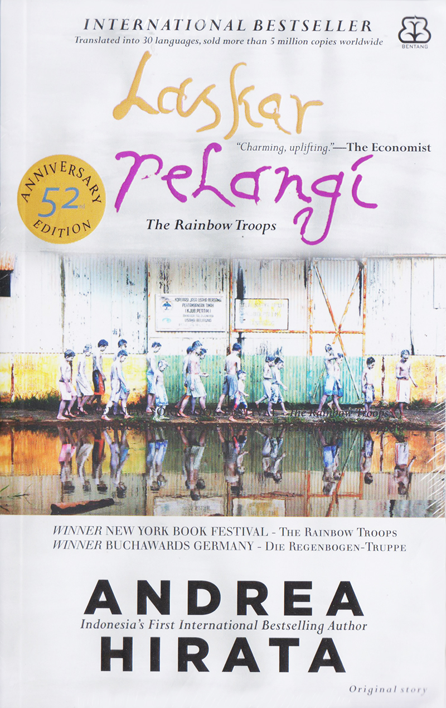

Buku pemrograman
Rp45.000
Buku ini membahas dasar-dasar pemrograman untuk pemula.

Buku Negeri 5 Menara
Rp55.000
Negeri 5 Menara adalah novel inspiratif yang mengangkat kisah perjuangan pendidikan berbasis pesantren. Buku ini terinspirasi dari kisah nyata penulisnya dan berhasil memotivasi banyak pembaca, khususnya pelajar dan pendidik. Novel ini terkenal dengan semboyan “Man Jadda Wajada” yang bermakna siapa yang bersungguh-sungguh pasti berhasil.

Buku Laskar Pelangi
Rp35.000
Buku Laskar Pelangi merupakan salah satu karya sastra Indonesia yang sangat populer dan berpengaruh. Novel ini mengangkat kisah nyata tentang perjuangan sekelompok anak dari keluarga sederhana dalam menempuh pendidikan di tengah keterbatasan. Andrea Hirata berhasil menyajikan cerita yang tidak hanya menyentuh emosi, tetapi juga sarat dengan nilai pendidikan, sosial, dan kemanusiaan.

Buku Bumi Manusia
Rp30.000
Bumi Manusia merupakan novel pertama dari Tetralogi Buru karya Pramoedya Ananta Toer. Buku ini mengangkat kisah kehidupan masyarakat Indonesia pada masa penjajahan Belanda, khususnya tentang perjuangan identitas, pendidikan, dan perlawanan terhadap ketidakadilan kolonial. Novel ini dikenal sebagai karya sastra besar yang memiliki pengaruh kuat dalam dunia literasi Indonesia.

Buku Ayat-Ayat Cinta
40.000
Ayat-Ayat Cinta merupakan novel religi populer yang berhasil menarik perhatian masyarakat luas. Buku ini memadukan kisah cinta, nilai-nilai Islam, dan kehidupan mahasiswa di luar negeri. Novel ini tidak hanya menyajikan romansa, tetapi juga sarat pesan moral dan spiritual yang mendalam.

Buku Rich dad poor dad
30.000
Rich Dad Poor Dad adalah buku populer dalam kategori pendidikan finansial. Robert Kiyosaki melalui pengalaman hidupnya menyajikan perbandingan antara dua figur ayah: “Ayah Kaya” (Rich Dad) dan “Ayah Miskin” (Poor Dad). Buku ini mengajarkan cara berpikir tentang uang yang berbeda dari kebanyakan orang.

Buku ALCHEMIST
40.000
The Alchemist adalah novel klasik internasional yang sangat populer dan inspiratif karya Paulo Coelho. Cerita ini telah menyentuh jutaan pembaca di seluruh dunia karena pesan kuatnya tentang mimpi, takdir, dan perjalanan hidup.

Buku Atomic Habits
35.000
Atomic Habits adalah buku populer tentang bagaimana membangun kebiasaan kecil yang memberikan dampak besar dalam hidup. James Clear menghadirkan pendekatan praktis yang bisa diaplikasikan oleh siapa saja, baik pelajar, pekerja, maupun pengusaha.

Buku The Power of Now
25.000
The Power of Now adalah buku spiritual terkenal yang mengajak pembaca untuk memahami kekuatan hidup di saat ini, atau present moment. Eckhart Tolle menggabungkan pandangan filosofi, meditasi, dan kesadaran diri untuk membantu pembaca mengurangi stres dan hidup lebih damai.

Buku The Great Gatsby
30.000
The Great Gatsby adalah salah satu novel klasik Amerika paling terkenal sepanjang masa. Ceritanya menggambarkan kilau dan kesedihan di balik kehidupan mewah Amerika pada era 1920-an, yang dikenal sebagai Jazz Age. Novel ini sering dianggap sebagai kritik mendalam terhadap impian Amerika (American Dream) dan kehidupan sosial kelas atas.